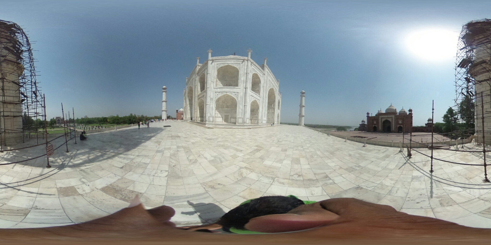

E
Entropy VR
🧭 0° N
🔇
Audio
⛶
▼
Go
🚀
🕌
Taj Mahal, India
Wonders
Lat: 27.1750° N, Lon: 78.0421° E
Magnificent ivory-white marble mausoleum on the south bank of the Yamuna river, commissioned in 1632.
🌐 Street View 360°
🌍 Google Earth 3D
📖 Wikipedia
Global Destinations (55 Places)
55 Available
All (55)
🏛️ Wonders
🗼 Landmarks
🏙️ Cities
🏔️ Nature
🏖️ Beaches
⛩️ Sacred
🪐 Space & Sci-Fi
📂
Upload 360° / Coordinates File
🎲 Surprise Me
